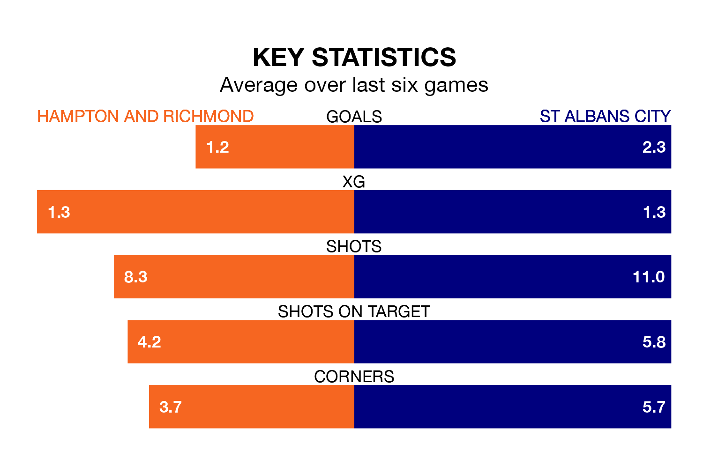

St Albans City travel to Hampton and Richmond on late Tuesday in National League South.
The visitors come into the game on the back of a defeat in their last match, having lost to Hemel Hempstead Town 2-1 at home.
Hampton & Richmond also lost their last match, 2-1 against Welling United.
With 52 goals in 30 games so far this season, St Albans are scoring more than average in the league with 1.7 goals per game. And they are conceding at an average rate, letting in 45 goals at a rate of 1.5 per game.
Hampton & Richmond are also above average scorers, with 1.6 goals per game, compared to a league average of 1.5. They have conceded 1.3 goals per game.
In the last 10 years, Hampton & Richmond and St Albans have played each other on 14 occasions. They won six each, and they drew twice.
On average, Hampton & Richmond scored 1.4 goals and St Albans 1.6 in those matches.
Their last meeting was on February 4 2023, when St Albans won 2-1 at home.
The home side are fifth in the table after 29 games, of which they have won 14 and drawn seven, earning 49 points.
City are one place behind Hampton & Richmond in sixth, with 15 wins and three draws putting them on 48 points.
Hampton & Richmond are in disappointing form in National League South, with one win and three draws from their last six games.
With three wins and a draw over that period, the visitors' form is better – they have taken 10 points from 18, compared to the hosts' six.
Updated: 10:01 (UTC), 06/02/24